Across the four Gospels, Jesus reached past every grand title available to him — Messiah, Son of David, King, Son of the Most High God — and called himself the Son of Man, more than eighty times. I built this slide deck in NotebookLM from my study materials to walk through why, and my notes run between the slides. The full written analysis behind it is in the companion post, The Dust and the Throne.
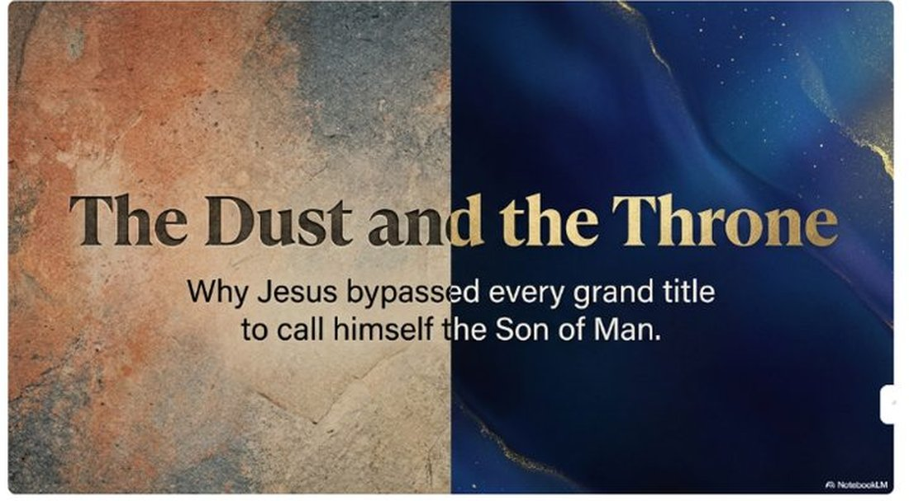
We must explain this to our friends seeking Christ. We also must model this.
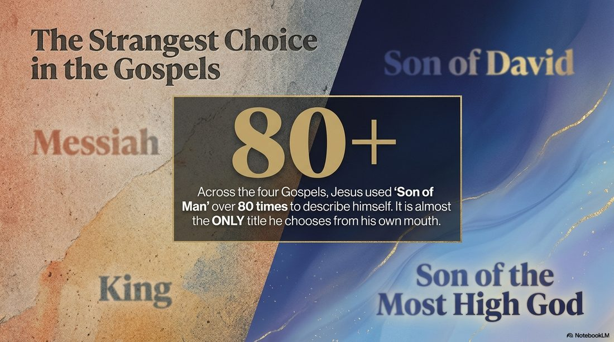
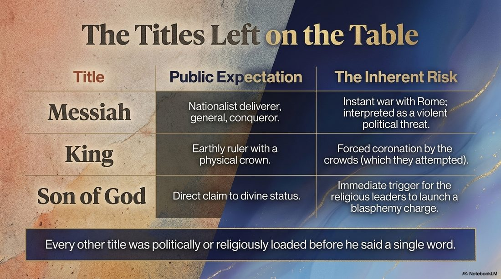
He used those grander terms of himself far less — fewer than five times.
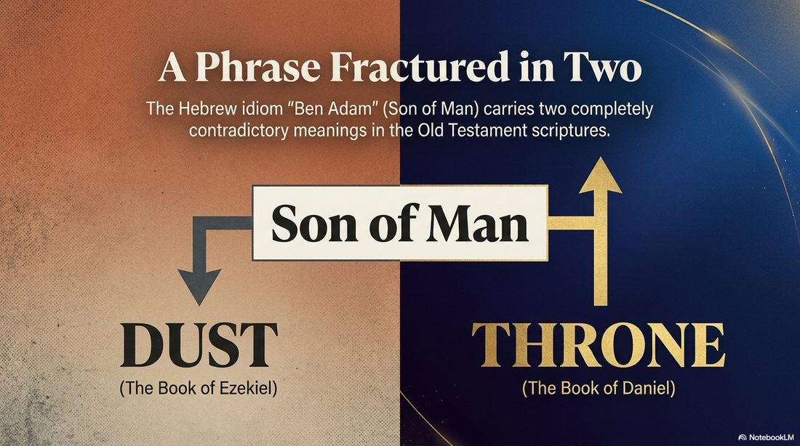
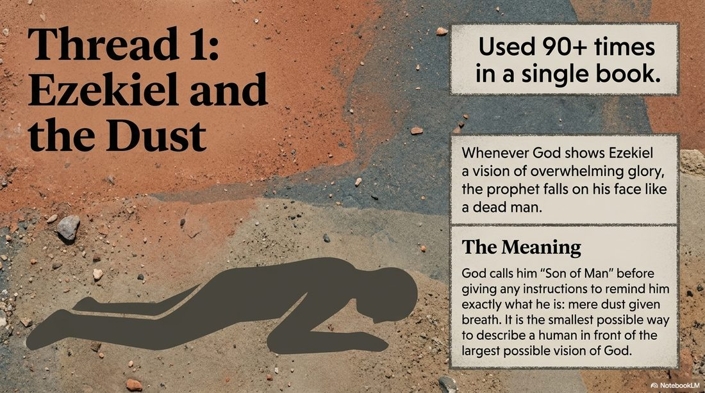
Again — explain this to our friends and loved ones. Model this ourselves.
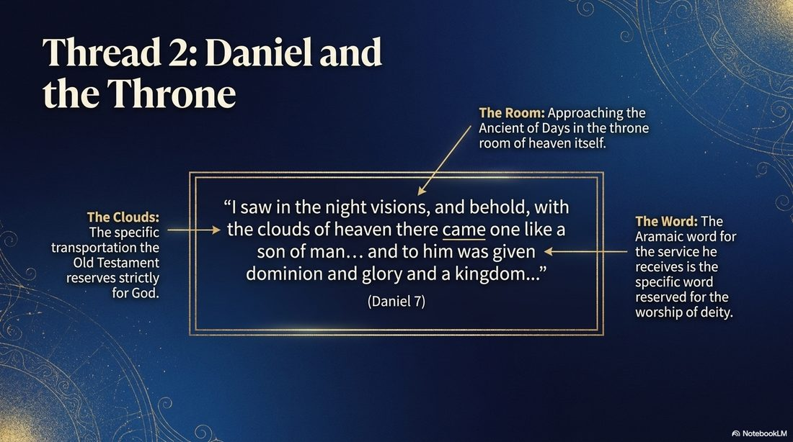
I would love to be a Jew in the Old Testament pondering this!
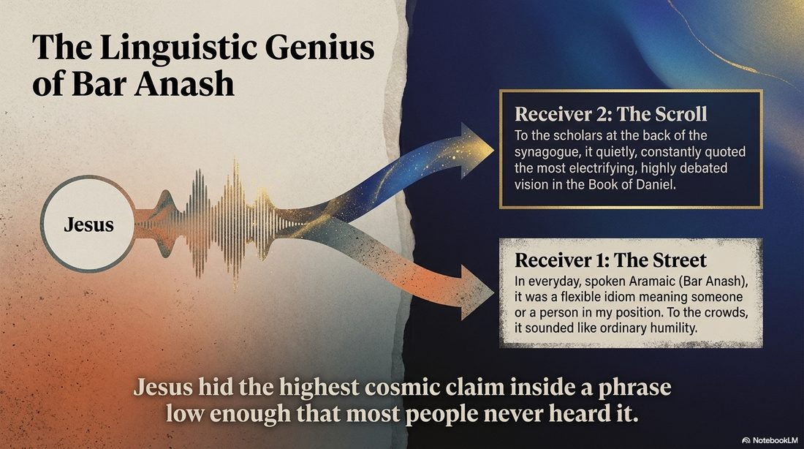
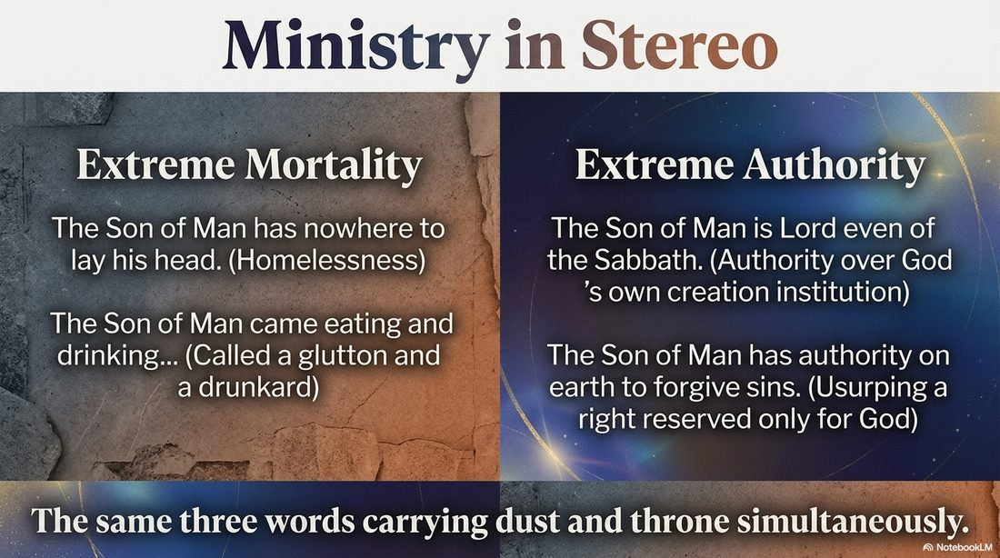
God chose to reveal Himself through Christ at the right time, and with the right language needed to properly capture the message — Hebrew and Greek.
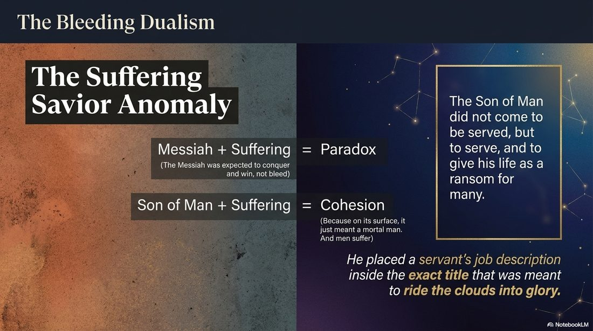
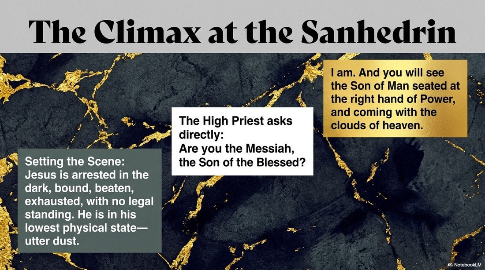
You are wise to ask this. You asked the right question — this is the question I came to answer.
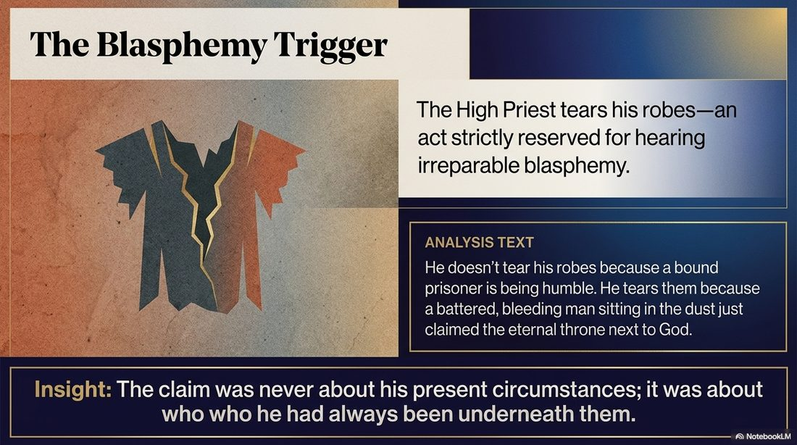
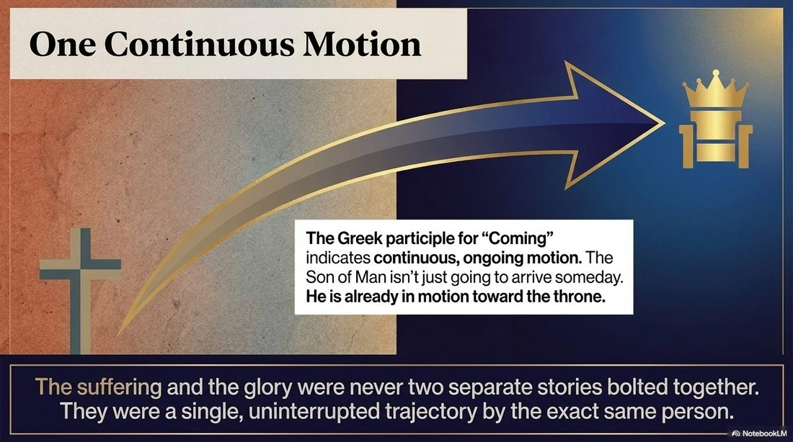
This is our God. Perfect in exaltation. Perfect in humility. Hallelujah!
Thank You, Father! In Your infinite wisdom You communicated this to us in an unmistakable way. Your Title. Your Life.
Comments